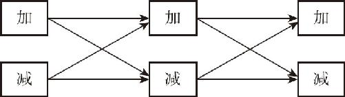

加减乘除混合运算时，运算的顺序是不能随便调整的．正因为如此，我们需要知道多项式运算要符合哪些规则．
多项式的加减运算，俗称去括号．为什么叫作去括号呢？因为一个多项式要加减另一个多项式，这两个多项式就只能先用括号括起来，不然这一大堆加减号直接放在一起，那不就直接变成一个多项式了吗？还怎么叫多项式的加减呢？我们在前文中，曾经把这个加减乘除的算法，组成了4行3列的网格，因此展开了初中代数的所有算式的算法．现在我们要学习的多项式加减，就相当于用一个加减算式去加减另一个加减算式．如果把这两个加减算式展开，一共有多少个算式呢？
如图8－2所示，如果把加式放在开头，有加式加上加式、加式减去加式、加式加上减式、加式减去减式四种算式；如果把减式放在开头，就又得到四个类似的算式，一共有八种算式．

图8－2
那这八种算式要怎么算呢？先看看八种算式有没有简单的分类方法．
首先，可以把每个多项式本身都看成是由加法组成的．如果它本身是减法，就把它看成加上一个负的算式就可以了．比如2x －3y ，就可以看成2x ＋（－3y ）．这样一来，就只有两种情况需要讨论了，那就是：
加式＋加式
加式－加式
又由于前后两个加式都在括号里面，所以又可以简单地理解为，在一个加减运算的算式中，怎么去括号．关于去括号的问题，也在小学阶段学习过了：如果括号前面是加号，那么就可以直接去括号；如果括号前面是减号，去掉括号的时候，括号里面的内容，就需要改变一下正负号．说起来就是这么简单，但是很多人就是经常犯错误．这是为什么呢？因为他们根本就没有深刻理解其中的原理，更没有把这个去括号的问题化作八个算式以建立自己的数学知识架构．有时候，一个规律越是简单，越会出现各种千变万化的结果，所以必须认真分析一下这个多项式加减的问题．
多项式相加，为什么括号可以随便去掉呢？这是根据加法结合律：因为a ＋（b ＋c ）＝a ＋b ＋c ，就是做去括号的处理，三个数相加，先加前边还是先加后边，结果不变．那么a ＋（b －c ）等于什么？等于a ＋b －c ，为什么b －c 不用变号呢？因为b －c 相当于b ＋（－c ），原来是b ＋（－c ），现在仍然是b ＋（－c ）．
多项式的减法，为什么a －（b ＋c ）＝a －b －c 呢？因为减去两个数的和，等于分别减去这两个数，但这是小学的算术思维．从小就会背诵的这句口诀不是这个代数式的原因解释，只是通过自然语言把代数式又描述了一遍而已．那么，这个算式该怎么证明呢？除了加法交换律之外，在乘法分配律中也有去括号的过程．
a （b ＋c ）＝a b ＋a c 这个过程不是在去括号吗？这个a －（b ＋c ）就是利用了乘法分配率的原理．在一个数字乘以－1的时候，这个－1中的1是可以忽略不写的，其实a －（b ＋c ）这个算式，本质上就是a ＋（－1）×（b ＋c ）的简写．这样一来，这个式子里就只有乘法和加法了，把－1按照乘法分配律乘到括号里面，那原来的b ＋c 就变成了（－1）×b ＋［（－1）×c ］，（－1）×b 可以直接写成－b ，（－1）×c 可以直接写成－c ，那么，整个算式就变成了a ＋（－b ）＋（－c ），也就是a －b －c ．从这个证明过程不难发现，减法去括号的问题，根本没有什么特殊的规律，而只是根据乘法分配律得到的推论．
那么，如果减去两个数的差又应该如何计算呢？在a －（b －c ）中，因为括号前面是减号，括号去掉以后，原来里面的内容全部都要变号，所以这个b 就变成了－b ，－c 就变成了c ，也就是说a －（b －c ）＝a －b ＋c ．在去括号的时候，除了熟记这个原理之外，最重要的就是分清减号和负号．有两个思路可供参考：一个思路是，把所有的减号都看成负号．这种办法的优点是不用考虑减法这种计算，一切都按加法看待．但这种思路的缺点在于，如果遇到了a －（b －c ）这种情况，你就必须凭空地插入一个乘法，把减去一个算式看作是加上－1乘以这个算式．另一个思路是，只把括号外边的减号看成减号，其他的减号一律看成负号，这是一种更常用的办法，它的优点是计算起来更简单，但缺点也很明显，就是你一定要注意：不要对同一个负号看两遍，一会儿把它看成负号，一会儿把它看成减号，否则也会出错．
多项式的加减规则就这么多，接下来我们通过几个习题再重新熟悉一下这些规则．比如2x ＋（3y －2x ）．括号前面是加号，直接把括号去掉就行，得到2x ＋3y －2x ，我们把减2x 看作加负2x ，于是可以把它挪到中间，得到2x －2x ＋3y ，2x 和－2x 相互抵消，得到最终结果是3y ．
接下来，再看一道题：4x －（3x ＋2y ）．括号前面是减号，3x 和2y 在去括号以后应该都变号，得到4x －3x －2y ，把含有x 的式子合并同类项，得到最终结果为x －2y ．
最后再看一道应用题：两数之和加上两数之差等于8，请问被减数是多少？被减数就是一个减法式子前面的那个数，就把这个代数式子写下来吧．假设这两个数是a 和b ，两数之和加上两数之差，用代数算式表示出来，就是（a ＋b ）＋（a －b ），其中的a 就是被减数．这个算式的结果等于8．那么，这个算式能不能化简呢？括号前面是加号，可以直接去掉，原式变为a ＋b ＋a －b ，再合并一下同类项，b 和－b 就不见了，结果剩下2a ，原式等于8，也就是2a ＝8，等式两边同时除以2，得到最终结果a ＝4．
以上我们学习了多项式的加减法．我要提醒你，这个多项式的加减法，其实是可以凑成八个算式的．把a ＋b 和a －b 这两个算式，通过加减法连接起来，展开成八个算式，看一下相互之间加减的结果如何．去括号的方法是代数的基本技能，在接下来的二元一次方程的求解过程中，会反反复复用到它．